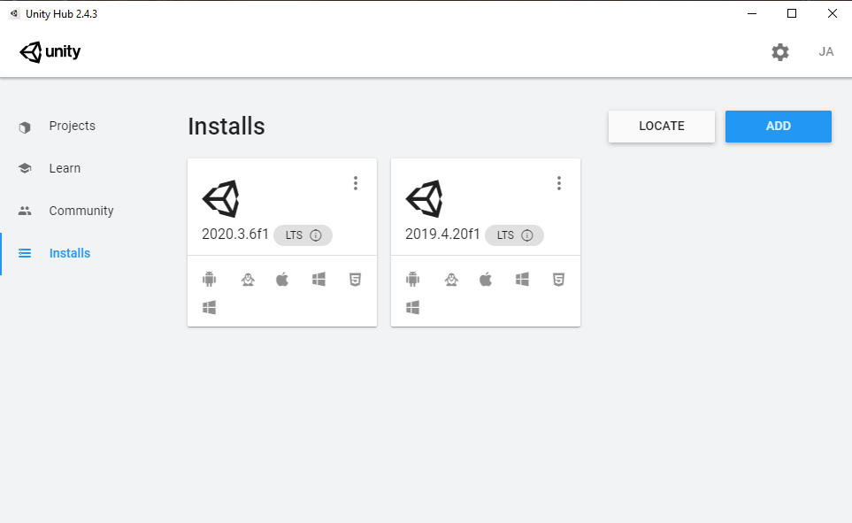
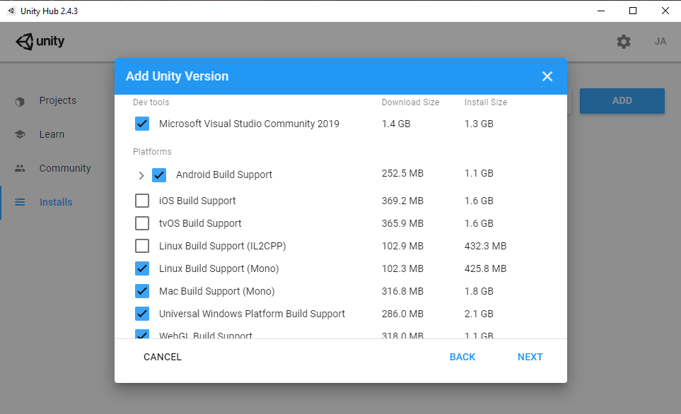
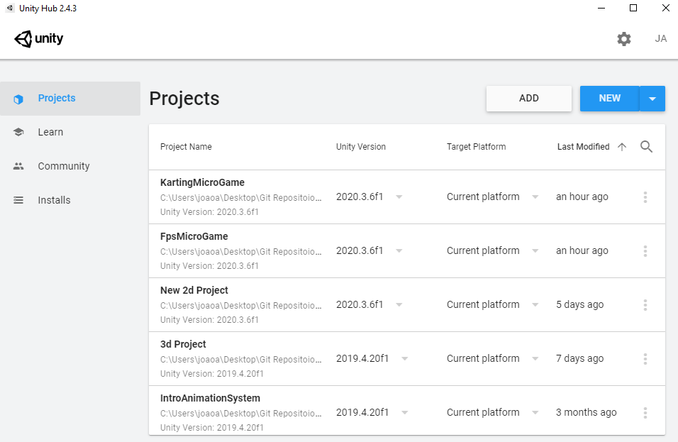
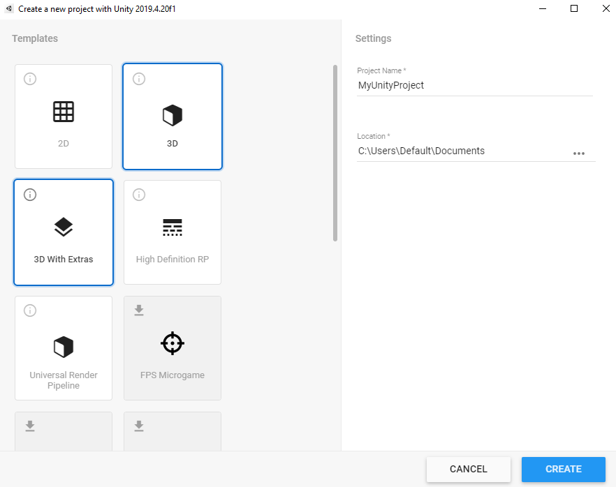
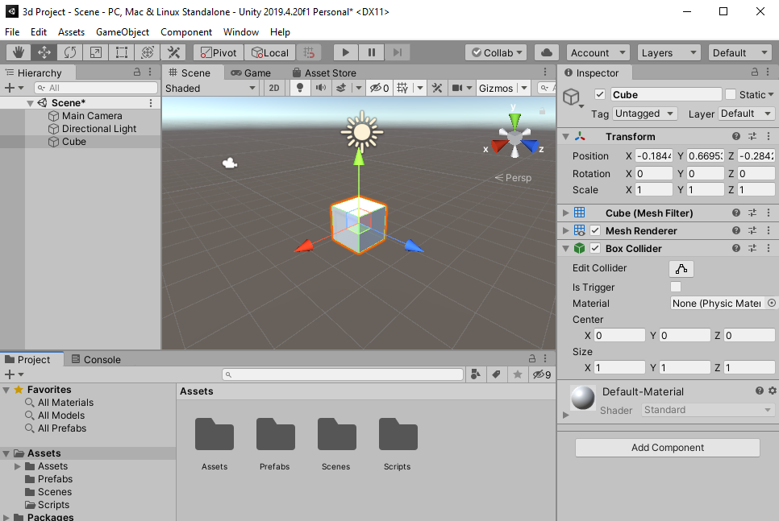

Uma das coisas mais complicadas quando vamos começar a trabalhar em uma ferramenta nova é não saber por onde começar, nesse pagina você ira ver qual os passos você deve tomar para começar o desenvolvimento na Unity, como utilizar o Editor(a ferramenta principal), navegar pelas janelas, personalizar o seu ambiente e mais algumas funcionalidades.
Como todo programa, primeiramente nos temos que instalar o laucher "Unity Hub", diretamente do site oficial . Acesse o site e aperte em "Comece" ou "Get started".
Antes de baixar o Unity hub, você tem a opção de escolher 3 planos ou assinaturas, sendo o Personal, Plus, Pro e Enterprise.
Cada um com as suas vantagens e preços, com os mais baratos e custo-benefício para um time pequeno sendo o Personal, gratuito com o acordo que você pode apenas arrecadar 100 mil dólares em um ano e o Plus custando 399 dólares por ano e pessoa com o limite de arrecadação de 200 mil dólares por ano.
Os mais caros e recomendados para uma equipe grande ou empresa são o Pro e o Enterprise, onde se sua equipe arrecada mais de 200 mil dólares por ano é preciso usar um dos dois planos. O Pro custando 1,800 dólares por ano e pessoa e o Enterprise custando 2000 dólares por ano, com a inclusão do acesso mínimo de 10 pessoas com o adicional de 200 dólares para cada pessoa adicional.
Apos escolher o plano, baixar e instalar o Unity hub, abra o programa, você será recebido pela tela de projetos, mas antes de começar a trabalhar com o editor, é preciso baixar uma versão, navegue ate a aba de "Installs".
Aqui você poderá visualizar todas as versões que você tenha baixado utilizando o botão "Add", você também pode baixar uma versão do site "Unity archive" e adicionar ao laucher usando o botão “locate”, apos apertar o botão de adicionar uma versão, você será abordado por uma janela que contem varias versões disponíveis, sendo as mais estáveis marcadas com a tag LTS(Suporte a longo prazo).
Apos escolher a versão aperte "Next" e você será guiado para a segunda parte onde você poderá escolher quais os adicionais do editor, é recomendado escolher um programa para editar codigo, o "Microsoft visual studio", os suportes para Windows, Android, Linux, Mac, WebGl e a Documentation. Quando marcar tudo oque precisar, aperte o botão "Done" para baixar e instalar o Editor(Isso pode demorar muito tempo).


Apos instalar navegue ate a aba de projetos e aperte em "new" para criar um novo projeto. Escolha um template, recomendo o template 3d, coloque o nome do projeto e escolha em qual pasta você ira armazena-lo, tambem da para selecionar templates de mini jogos feitos pela Unity, com visâo de ensinar como programar em um jogo com sistemas pre-feitos.


Apos criar um projeto o editor começara a descompactar e abrir, levando alguns minutos para abrir, e finalmente te levando para o espaço de desenvolvimento.
Dependendo do tipo template que você escolheu, você ira ver um tipo de janela, se o template for 3d, uma câmera e uma lâmpada estarão flutuando em um espaço
cinza, está é a janela "SCENE", aqui é onde você vai fazer todas as modificações do cenário e espaço 3d, na aba superior você pode ver as abas nomeadas "Scene",
"Game" e "Asset Store", apertando na aba "Game" vai mudar a tela para a visão da câmera principal do jogo, é esta tela que vai aparecer quando o seu jogo estiver
rodando. A janela "Asset Store" é uma parte mais complicada que vai ficar pro final desse blog, na ultima pagina, mas explicando rapidamente, é um mercado interno
onde usuários podem vender e comprar "assets", ou produtos virtuais, como objetos, personagens, códigos, e animações.
A esquerda, esta uma janela chamada "Hierarchy" ou hierarquia, aqui é onde todos os objetos(personagens, terreno, inimigos, obstáculos, entidades fantasmas, etc...)
ativas vão ficar, por um exemplo, é aqui onde o objeto do personagem principal estará praticamente 100% do jogo, mas se ele morrer, é normal deletar o seu objeto da
"Hierarchy", apertando o botão direito ira mostrar uma lista onde você tem a opção de criar vários objetos: câmeras, cubos 3d, imagens, luzes, etc..
Aperte o botão direito e crie um cubo 3d
Voltando a tela Scene, selecione o cubo 3D e olhe no canto direito, você vai ver uma janela chamada "Inspector", é nessa janela que você vai poder ver e editar todos
os componentes modulares de um objeto. Um bom exemplo de componente é o "Transform", um componente presente em todo objeto dentro da Unity, é graças a ele que você
consegue colocar e mover os objetos no espaço 3D, esse é um componente padrão que não da para ser removido, outros exemplos de componente são os: "Box Collider"
(Componente que trata das colisões de um objeto"), "Mesh Renderer"(Componente que desenha na tela a forma 3d de um objeto), "RigidBody"(Componente que simula a
física de um objeto) e "Script"(O componente que carrega um código que pode ser executado quando o objeto esta ativo no jogo).
È possível adicionar mais componentes na apertando no botão "Add Component"
Se você olhar na parte inferior, você vai ver uma grande janela chamada "Project", é aqui que você pode olhar, excluir, criar e adicionar "Assets" para o seu jogo,
com a pasta "Assets" sendo a pasta raiz onde você vai adicionar tudo, eu recomendo criar pastas separadas para adicionar cadê tipo de conteúdo, "Prefabs" pra
pré-fabricados, "Scenes" para fazes do jogo, "Scripts" para códigos, etc...
Crie Duas pastas, uma chamada "Scripts" e outra chamada "Prefabs"

Na próxima parte desse blog nos iremos aprofundar mais na parte dos Scripts, mas por enquanto vamos ver como encontra mais janelas de funcionalidade e como editar o
layout.
Na parte superior do programa, em cima da janela "Hierarchy" e das ferramentas de navegação, você vai ver as abas de "File", "Edit", "Asset", "GameObject",
"Component", "Window" e "Help", essas são abas de utilidades que vão nos ajudar mais pra frente, por enquanto selecione a aba "Window". Dentro do menu drop down
que acabou de aparecer estão todas as janelas do projeto que você vai precisar: Iluminação, Configurações avançadas, Janelas de animação e mais, por enquanto vamos
pegar uma janela bem importante que pode não estar na sua tela atualmente, ela esta dentro de (Window > Windows > Console). Com esta janela, você vai poder fazer
"debugging" ou testes de mesa, se precisar ou acabar fechando alguma janela importante, é só voltar nessa aba.
Agora para tratar do visual do seu editor, ele pode estar meio bagunçado ou lhe dando um pouco de agonia, para customizar ele, você precisa apertar no nome de uma aba e arrastar para onde você quiser, misturando elas da forma que você preferir, ou se você quiser usar um layout pré-pronto, ou salvar o seu, é só olhar no canto superior direito, no botão ao lado de "layers", aqui você pode salvar o seu layout, deleta-lo, ou usar um padrão
João Antonio Fernandes©
2021